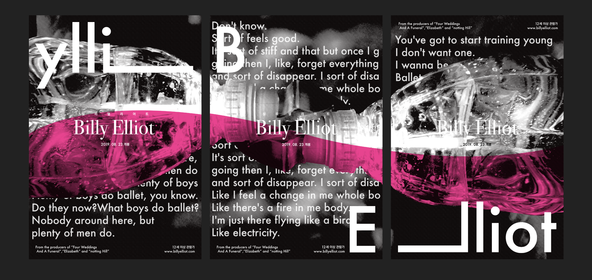

빌리엘리어트

2019년 (2D 포스터)
영화 ‘빌리 엘리어트’의 포스터 리디자인이다.
중심이 되는 개체는 '분무기'로, 분무기가 가진 속성과 빌리의 속성을 연결지어 디자인하였다. 이 표지는 총 3편의 시리즈로 이루어져 있다. 분무기의 아랫부분이 나타나있는 1,3번은 빌리의 성장 과정 및 과도기를 나타내고 머리 부분이 맞닿아 있는 2번은 빌리가 춤에 대한 생각이 정립된 순간을 나타낸다. 분홍 색상을 물의 흐름대로 배치하여 부드럽고 아름다운 발레의 분위기를 연출했다.
투명한 개체를 사용하여 반짝이는 느낌을 살리기 위해 노력했다. 사진 촬영 시, 하이 컨트라스트 효과와 흑백 효과를 사용하여 분무기의 질감을 강하게 나타냈다. 특히 플라스틱 재질인 분무기를 구겼을 때의 표면 느낌이 좋아서 울퉁불퉁한 느낌을 더 살리기 위해 하프톤 효과를 사용했다.
세 화면의 두개의 분무기는 빌리의 내면들을 상징하고, 배경에 있는 빌리의 대사를 통해 주제를 더욱 부각 시켰다. 가운데에 위치한 분홍 색상을 통해, 발레의 부드러움과 전체적인 영화의 분위기를 표현하고자 했다. 또한 한 화면에 모든 사진을 담는 것이 아니라 세 화면에 위치시켜, 세 가지 포스터를 이으면 하나의 포스터로서 완성 되도록 구성했다.